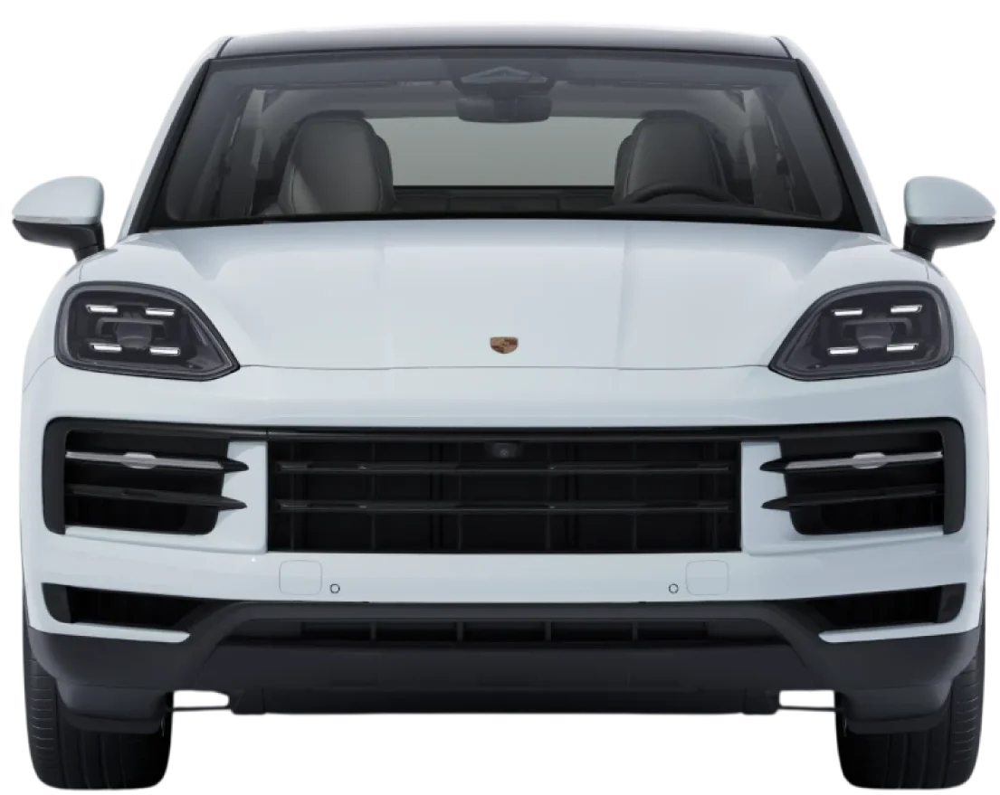

Start with your car.
Your make, model and what you’ve noticed. A clear picture from the very first enquiry.
Specialist attention. A simpler service experience.
Welcome to the next chapter of Volkspeed.

Great cars deserve thoughtful care.
From everyday maintenance to complex diagnostics, Volkspeed brings continental, hybrid and EV expertise to two workshops in Selangor.
The people behind your drive ↗
Get to the source of a warning light, unusual noise or change in performance.
Explore service ↗
The right attention for your engine, your mileage and your next journey.
Explore service ↗Specialist attention for the technology behind your drive.
Explore service ↗Continental engineering. Hybrid systems. Electric possibilities. Different technology, with the same attention to detail.
Discover hybrid & EV careTell us the essentials.
Let the conversation start there.
Your make, model and what you’ve noticed. A clear picture from the very first enquiry.
Choose Bukit Raja or Glenmarie, with a day and arrival window that suits you.
Review your details and open a WhatsApp draft. The workshop confirms the appointment.

Find specialist care closer to your everyday drive.
No. Choose your preferred branch and time, then review the enquiry. The workshop would confirm availability and the service scope before your visit. This concept sends demo enquiries to Made by Kites.
Yes. Choose diagnostics and describe what you have noticed, such as a warning light, a noise, or a change in how the car drives. Add your model, year and mileage if you know them.
The right scope depends on the vehicle and the work needed. This demo does not show sample prices as real quotations. The workshop would confirm costs after reviewing your enquiry.
Volkspeed lists Porsche, Mercedes-Benz, BMW, Tesla, Audi, Volvo, Lamborghini and Ferrari on its website, and describes servicing all car brands. Ask the team about support for your specific model.
Tell us what you drive. We’ll help with the next step.